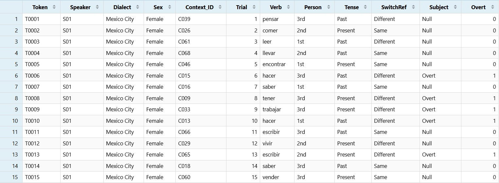
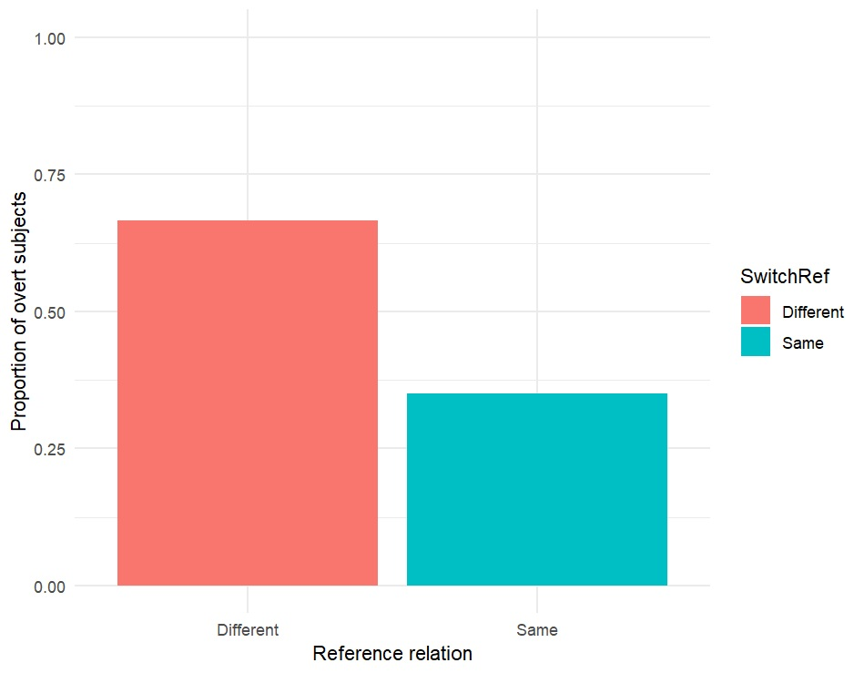
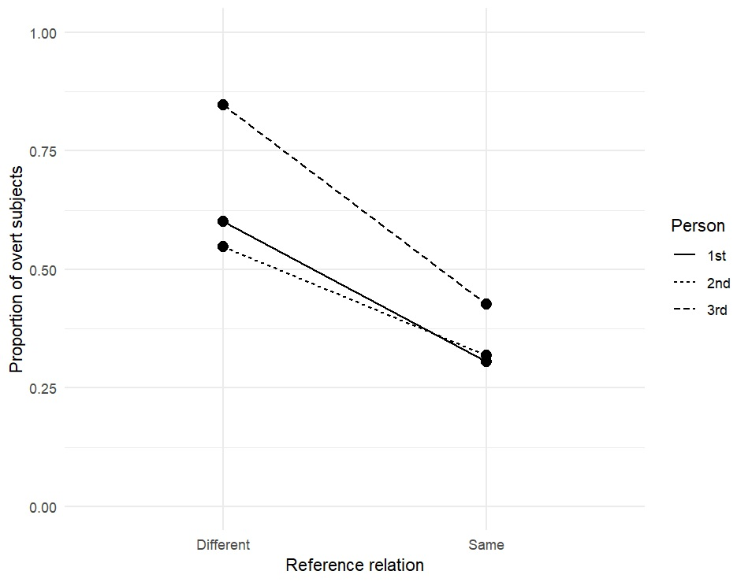
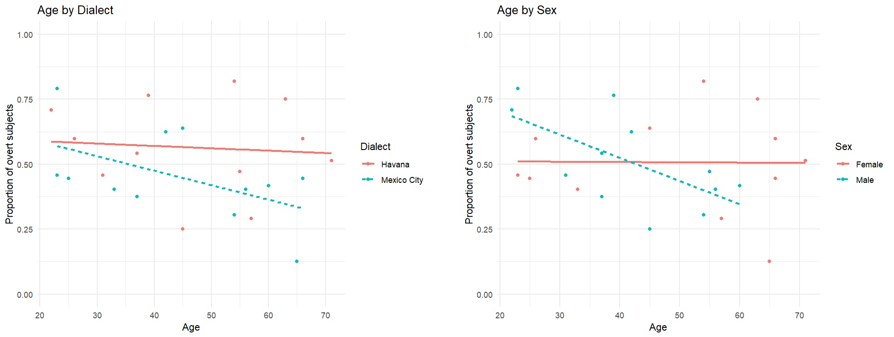
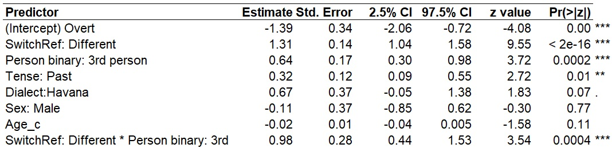

In the previous unit, we used linear mixed-effects models to analyse a continuous dependent variable. We now turn to a closely related situation in which the dependent variable has only two possible outcomes.
In this unit, we will analyse Spanish subject expression. Spanish allows both overt subjects and null subjects, and we will ask what linguistic factors affect the probability that a subject is overt.
The statistical logic is very similar to the linear mixed-effects models we have already used. We still need to:
The important difference is that our dependent variable is now binary rather than continuous.
For a binary dependent variable, we use a logistic mixed-effects model, also called a generalized linear mixed-effects model or GLMM.
We will fit the model with glmer() from the
lme4 package.
library(tidyverse)
library(lme4)We will use a simulated dataset on Spanish subject expression.
Speech was collected from 24 Spanish speakers, 12 from Mexico City
and 12 from Havana. Participants completed sociolinguistic interviews
and narrative tasks. Finite clauses with referential subjects were
extracted from the recordings. Each clause was coded for whether the
grammatical subject was overt or null,
grammatical person, tense, verb,
and whether the subject referent was the same as or
different from the subject referent of the preceding
clause.
Download Spanish_subj.xlsx
library(readxl)
subj <- read_excel("C:/Users/mikey/Dropbox/website/GitHub/LING804/Glmems/subj.xlsx")
View(subj)
head(subj)
str(subj)
The dataset contains 1,728 finite clauses from 24 speakers. Each speaker contributes 72 observations.
The dependent variable is subject expression.
Subject will be our dependent variable with levels:
Overt or Null. These typically appear as
numeric values (0 and 1) for GLMMs. They are
already converted in our dataset in the Overt column.
If they were not already converted you could run:
subj$Overt=ifelse(subj$Subject=="Overt", 1, 0)
table(subj$Overt)
0 1
850 878Again, Subject is useful for reading and tabulating the
data. Overt is the numeric binary variable that we will use
in the logistic regression.
The main predictors are:
SwitchRef
SameDifferentPerson
1st2nd3rdTense
PresentPastDialect
Mexico CityHavanaSex
FemaleMaleAge
The dataset also contains:
Speaker Verb Context_ID
Trial Token
Each speaker contributes multiple observations, and the
same verb lemmas occur repeatedly across the dataset. We
will therefore include random intercepts for Speaker and
Verb.
As always, we should inspect the data before fitting a statistical model.
First, look at the overall distribution of overt and null subjects.
table(subj$Subject)
Null Overt
850 878
prop.table(table(subj$Subject))
Null Overt
0.4918981 0.5081019 Note: prop.table is a built-in function used to
convert raw frequency counts in a table or matrix into relative
frequencies (proportions)
These outputs show that the dataset is fairly balanced overall.
However, our main question is not whether overt and
null subjects are equally common overall. We want to know
whether the probability of an overt
subject changes according to the linguistic
context.
Start with SwitchRef.
subj %>%
group_by(SwitchRef) %>%
summarise(
N = n(),
Overt_N = sum(Overt),
Overt_Proportion = mean(Overt)
)
# A tibble: 2 × 4
SwitchRef N Overt_N Overt_Proportion
<chr> <int> <dbl> <dbl>
1 Different 864 575 0.666
2 Same 864 303 0.351There is already a clear descriptive pattern. Overt
subjects occur much more frequently in different-reference
contexts than in same-reference contexts.
subj %>%
group_by(SwitchRef) %>%
summarise(
Overt_Proportion = mean(Overt)
) %>%
ggplot(aes(x = SwitchRef, y = Overt_Proportion, fill=SwitchRef)) +
geom_col() +
ylim(0, 1) +
labs(
x = "Reference relation",
y = "Proportion of overt subjects"
) +
theme_minimal()
We are also interested in whether the effect of
switch reference differs according to
grammatical person.
subj %>%
group_by(SwitchRef, Person) %>%
summarise(
N = n(),
Overt_Proportion = mean(Overt),
.groups = "drop"
)
# A tibble: 6 × 4
SwitchRef Person N Overt_Proportion
<chr> <chr> <int> <dbl>
1 Different 1st 288 0.601
2 Different 2nd 288 0.549
3 Different 3rd 288 0.847
4 Same 1st 288 0.306
5 Same 2nd 288 0.319
6 Same 3rd 288 0.427The difference between same-reference and
different-reference contexts appears especially large for
third-person subjects.
We can visualize this possible interaction.
# Calculate the proportion of overt subjects
# for each SwitchRef x Person combination
subj %>%
group_by(SwitchRef, Person) %>%
summarise(
Overt_Proportion = mean(Overt),
.groups = "drop"
) %>%
# Plot the proportion of overt subjects
ggplot(aes(
x = SwitchRef,
y = Overt_Proportion,
group = Person,
linetype = Person
)) +
# Add points for each group and connect them with lines
geom_point(size = 3) +
geom_line() +
# Keep the y-axis on the probability scale from 0 to 1
ylim(0, 1) +
# Add informative axis and legend labels
labs(
x = "Reference relation",
y = "Proportion of overt subjects",
linetype = "Person"
) +
theme_minimal()
Person currently contains three levels:
1st2nd3rdHowever, first- and second-person subjects are both speech-act participants, while third-person subjects refer to individuals outside the speaker-addressee relationship.
The descriptive results also suggest that first and second person behave relatively similarly, while third person shows a noticeably different pattern.
We can therefore test whether a simpler binary distinction provides
an adequate representation of Person:
SAP = first and second person (SAP = speech-act
participants)3rd = third person# Collapse first and second person into one category
subj$Person_binary = ifelse(
subj$Person %in% c("1st", "2nd"),
"SAP",
"3rd"
)
subj$Person_binary = factor(
subj$Person_binary,
levels = c("SAP", "3rd")
)
table(subj$Person, subj$Person_binary)
SAP 3rd
1st 576 0
2nd 576 0
3rd 0 576Another predictor that requires close inspection is that of
age.
#Age by Dialect
age_plot = subj %>%
group_by(Speaker, Age, Dialect) %>%
summarise(
Overt_Proportion = mean(Overt),
.groups = "drop"
)
ggplot(age_plot, aes(
x = Age,
y = Overt_Proportion,
color = Dialect,
linetype = Dialect
)) +
geom_point() +
geom_smooth(
method = "lm",
se = FALSE
) +
ylim(0, 1) +
labs(
title = "Age by Dialect",
x = "Age",
y = "Proportion of overt subjects",
linetype = "Dialect"
) +
theme_minimal()
#Age by Sex
sex_plot = subj %>%
group_by(Speaker, Age, Sex) %>%
summarise(
Overt_Proportion = mean(Overt),
.groups = "drop"
)
ggplot(sex_plot, aes(
x = Age,
y = Overt_Proportion,
color = Sex,
linetype = Sex
)) +
geom_point() +
geom_smooth(
method = "lm",
se = FALSE
) +
ylim(0, 1) +
labs(
title = "Age by Sex",
x = "Age",
y = "Proportion of overt subjects",
linetype = "Sex"
) +
theme_minimal()

Based on these figures, age may have an interaction with
both Dialect and Sex. As the trend lines show
distinct trajectories for Mexico City speakers and
Havana speakers and distinct trajectories for
Males vs. Females.
These are descriptive patterns. We have not yet determined whether the differences are statistically reliable once the other predictors and repeated observations are taken into account.
Our main hypothesis is:
H1.
Overtsubjects will be more likely indifferent-referencecontexts than insame-referencecontexts, with the difference expected to be especially strong forthird-person subjects.
The corresponding null hypothesis is:
H0. The probability of an
overtsubject will not differ systematically betweensame-referenceanddifferent-referencecontexts, and the apparent difference acrossgrammatical personwill not represent a reliable interaction.
Before fitting the model, check the variables and their levels.
table(subj$SwitchRef)
table(subj$Person)
table(subj$Tense)
table(subj$Dialect)
table(subj$Sex)
table(subj$Age)
summary(subj$Age)
table(subj$Speaker)
table(subj$Verb)
#Outputs
#Switch Reference
Different Same
864 864
#Person
1st 2nd 3rd
576 576 576
#Tense
Past Present
864 864
#Dialect
Havana Mexico City
864 864
#Sex
Female Male
864 864
#Age
22 23 25 26 31 33 37 39 42 45 54 55 56 57 60 63 65 66 71
72 144 72 72 72 72 144 72 72 144 144 72 72 72 72 72 72 144 72
Min. 1st Qu. Median Mean 3rd Qu. Max.
22.00 32.50 45.00 45.62 57.75 71.00
#Speaker
S01 S02 S03 S04 S05 S06 S07 S08 S09 S10 S11 S12 S13 S14 S15 S16 S17 S18 S19 S20 S21 S22 S23 S24
72 72 72 72 72 72 72 72 72 72 72 72 72 72 72 72 72 72 72 72 72 72 72 72
#Verb
buscar 72
comer 72
comprar 72
creer 72
decir 72
encontrar 72
escribir 72
estudiar 72
hablar 72
hacer 72
leer 72
llamar 72
llevar 72
mirar 72
pensar 72
querer 72
saber 72
salir 72
tener 72
trabajar 72
vender 72
venir 72
vivir 72
volver 72For this analysis, the variables have the following roles.
| Variable | Type | Role |
|---|---|---|
Overt |
Binary | Dependent variable |
SwitchRef |
Categorical | Fixed effect |
Person |
Categorical | Fixed effect |
Tense |
Categorical | Fixed effect |
Dialect |
Categorical | Fixed effect |
Sex |
Categorical | Fixed effect |
Age |
Continuous | Fixed effect |
Speaker |
Categorical | Random effect |
Verb |
Categorical | Random effect |
Most of the predictors we have worked with so far have been
categorical. For example, Dialect contains
two categories (Mexico City and Havana) and
Sex contains two categories (Female and
Male). Categorical predictors are interpreted relative to a
reference level.
Age is different. Although ages are naturally ordered,
age measured in years also contains meaningful information about the
distance between values. The difference between ages 22
and 23 is one year, whereas the difference between ages 22 and 45 is 23
years.
For this reason, we will treat Age as a numeric
continuous predictor rather than as an ordered factor.
If the observed ages were:
22, 23, 27, 45, 71R uses those actual numerical values. It does not automatically recode them according to their position in the ordered list:
22 = 0
23 = 1
27 = 2
45 = 3
71 = 4Doing so would discard the actual distances between ages. For example, it would treat the difference between 22 and 23 as equivalent to the difference between 45 and 71. I was actually taught to do it this way, and I used to teach it this way, but I am trying to do better 🥴.
When Age is entered directly into a regression model,
its coefficient represents the predicted change associated with a
one-year increase in age.
For example, suppose a logistic regression produced:
Age
β = -0.04This means that each additional year of age is associated with a
decrease of 0.04 in the log-odds of producing an overt
subject, holding the other predictors constant.
If the intercept were 0.32 and the age coefficient were
-0.04, the predicted log-odds for a
45-year-old would be:
(0.32)+(-0.04*45)
[1] -1.48The coefficient is therefore multiplied by the speaker’s actual numerical age, not by the speaker’s position in the list of observed ages.
There is one inconvenience with using raw age.
The intercept represents the predicted outcome when all numerical
predictors equal 0. If we enter Age directly,
the intercept therefore describes a speaker who is 0 years
old.
That value is outside the range of our data and is not useful for interpreting adult Spanish speakers.
We can solve this by centering age.
# Centre age around the mean age of the speakers
subj$Age_c = subj$Age - mean(subj$Age)
table(subj$Age_c)
-23.625 -22.625 -20.625 -19.625 -14.625 -12.625 -8.625 -6.625 -3.625 -0.625 8.375 9.375 10.375 11.375 14.375
72 144 72 72 72 72 144 72 72 144 144 72 72 72 72
17.375 19.375 20.375 25.375
72 72 144 72
#compared to
table(subj$Age)
22 23 25 26 31 33 37 39 42 45 54 55 56 57 60 63 65 66 71
72 144 72 72 72 72 144 72 72 144 144 72 72 72 72 72 72 144 72 The mean age in this dataset is approximately 45.6 years.
After centering:
Importantly, centering does not change the distances between ages. A ten-year age difference is still represented by a difference of 10.
It simply changes where 0 is located.
The coefficient for Age_c still represents the predicted
change associated with a one-year increase in age.
If the model gives:
Age_c
β = -0.04we would interpret this as: Each one-year increase in
age was associated with a decrease of 0.04 in
the log-odds of producing an overt subject, holding the
other predictors constant.
Because the coefficient is expressed in log-odds, -0.04
does not mean that the probability of an overt subject
decreases by four percentage points per year.
Later, we can use plogis() to convert model predictions
from log-odds into probabilities.
It is important to distinguish the zero point of a continuous predictor from the reference level of a categorical predictor.
For example:
Mexico City can be the reference level of
DialectFemale can be the reference level of
SexSame can be the reference level of
SwitchRefAge_c has no categorical reference level. Instead, its
value of 0 corresponds to the mean age because we
deliberately centred the variable there.
The intercept in our model therefore represents the predicted log-odds for a speaker in all of the categorical reference groups at the mean age of the sample.
We now need to decide which predictors and interactions should be included in the model.
Our dependent variable is:
Overt
0 = null subject1 = overt subjectOur fixed effects are:
SwitchRefPersonTenseDialectSexAge_cOur random effects are:
SpeakerVerbThe exploratory analysis also suggested three possible interactions:
SwitchRef * PersonAge_c * DialectAge_c * SexAnd the binary vs. trinary variables for Person_binary
and Person:
Binary (Levels: SAP, Third)Trinary (Levels: 1st, 2nd, 3rd)The SwitchRef * Person interaction tests whether the
effect of switch reference differs according to grammatical
person. The descriptive results suggest that the difference between
same-reference and different-reference
contexts may be particularly strong for third-person
subjects.
The Age_c x Dialect interaction tests whether the
relationship between age and overt subject use
differs between speakers from Mexico City and
Havana. We can see the difference in dialect
in the previous graph.
The Age_c x Sex interaction tests whether the
relationship between age and overt subject use
differs between female and male speakers.
Again, we can see the difference in sex in the previous
graph.
Remember that an apparent interaction in a graph does not necessarily mean that the interaction will improve the statistical model. We will compare models to determine which interactions should be retained.
The binary vs. trinary arrangements of Person are both
theoretically and observationally motivated. The theoretically motivated
binary arrangment comes from the fact that first and
second person are both speech-act participants, whereas
third person is not. So a binary contrast of 1st/2nd vs. 3rd person is
defensible theoretically. It also matches the descriptive pattern fairly
well:
Third person is clearly behaving differently, while first and second are relatively similar.
Before fitting the model, we need to set useful reference levels for the categorical predictors.
We will use:
Same for SwitchRef1st for PersonSAP for Person_binaryPresent for TenseMexico City for DialectFemale for Sexsubj$SwitchRef = relevel(factor(subj$SwitchRef), ref = "Same")
subj$Person = relevel(factor(subj$Person), ref = "1st")
subj$Person_binary = relevel(factor(subj$Person_binary), ref = "SAP")
subj$Tense = relevel(factor(subj$Tense), ref = "Present")
subj$Dialect = relevel(factor(subj$Dialect), ref = "Mexico City")
subj$Sex = relevel(factor(subj$Sex), ref = "Female")
# Check the reference levels
levels(subj$SwitchRef)
levels(subj$Person)
levels(subj$Person_binary)
levels(subj$Tense)
levels(subj$Dialect)
levels(subj$Sex)
#Output
[1] "Same" "Different"
[1] "1st" "2nd" "3rd"
[1] "SAP" "3rd"
[1] "Present" "Past"
[1] "Mexico City" "Havana"
[1] "Female" "Male"Age_c does not require a reference level because it is
continuous. Its value of 0 represents the mean age of
approximately 45.6 years.
The intercept will therefore represent the predicted log-odds of an overt subject for:
same-reference contextfirst-person subject (for the binary
model)SAP subject (speech-act participant and
for the trinary model)present tensefemale speakerMexico CityWe fit generalized linear mixed-effects models
(GLMMs), also called logistic mixed-effects regressions
when the dependent variable is binary, using glmer() from
the lme4 package. The syntax is very similar to
lmer(), with two important differences.
First, GLMMs require us to specify a family. Because our
dependent variable is binary (0 or 1), we
use:
family = binomialfamily types.
Some common model families are:
| Family | Typical dependent variable | Default link | Example |
|---|---|---|---|
gaussian |
Continuous measurements | identity | VOT, duration, F0 |
binomial |
Binary outcomes | logit | overt vs. null subject |
poisson |
Counts | log | number of tokens/events |
Gamma |
Positive, continuous, right-skewed values | inverse | reaction time, duration |
| negative binomial | Overdispersed counts | log | token counts with more variability than a Poisson model allows |
For example:
family = binomial
family = poisson
family = GammaA gaussian model with an identity link is essentially
the type of linear mixed-effects model we fitted previously with
lmer(), so we would normally just use lmer()
for that case.
For count data, poisson assumes that the variance is
approximately equal to the mean. When the data show substantially more
variation than this assumption allows, a negative-binomial model is
often preferable.
Gamma is typically used for positive continuous outcomes
that are right-skewed, such as reaction times, durations, or costs.
glmer.nb(). We will not be going
over this in this unit.
This tells R to fit a binomial model using the logit link,
so the model predicts the log-odds that the outcome coded as
1 will occur. In our dataset, this is the probability that
a subject is overt.
Second, unlike the linear mixed-effects models fitted with
lmer(), there is no REML option or
REML refitting step for a logistic mixed-effects model.
Models fitted with glmer() are estimated using maximum
likelihood, so we can compare competing models directly using
AIC, BIC, and likelihood-ratio
tests with anova().
Probabilities are restricted to values between 0 and
1 (or 0% and 100%). A linear regression equation, however,
can produce any value from negative infinity to positive infinity. If we
modelled percentages directly, the model could therefore predict
impossible values such as -15% or 130%.
The logistic model solves this by transforming probabilities into
log-odds. Log-odds can range from negative infinity to
positive infinity, so they can be modelled with an ordinary linear
equation. The model works on the log-odds scale internally and then
converts those values back into probabilities between 0 and
1.
This is why binomial GLMM coefficients are expressed in log-odds rather than percentage points. A one-unit change in a predictor produces a constant change in log-odds, but the corresponding change in probability depends on where you are on the probability scale.
For example, a coefficient of0.5 cannot simply mean “+50
percentage points,” because moving from 10% to 20% is not statistically
equivalent to moving from 80% to 90% on the logistic scale.
person modelsWe first need to decide whether Person is better
represented by three levels (1st, 2nd,
3rd) or by the simpler binary distinction
(SAP, 3rd).
Because our hypothesis concerns whether the effect of
SwitchRef differs according to person, we should include
the SwitchRef * Person interaction in both
models.
person modelFirst, fit the model using the original three-level
Person variable.
model_person3 = glmer(Overt ~ SwitchRef * Person + Tense + Dialect + Sex + Age_c + (1 | Speaker) + (1 | Verb), family = binomial, data = subj)
summary(model_person3)
#Output:
Generalized linear mixed model fit by maximum likelihood (Laplace Approximation) ['glmerMod']
Family: binomial ( logit )
Formula: Overt ~ SwitchRef * Person + Tense + Dialect + Sex + Age_c + (1 | Speaker) + (1 | Verb)
Data: subj
AIC BIC logLik -2*log(L) df.resid
1948.7 2014.2 -962.4 1924.7 1716
Scaled residuals:
Min 1Q Median 3Q Max
-4.3779 -0.6899 0.1697 0.7070 5.1705
Random effects:
Groups Name Variance Std.Dev.
Speaker (Intercept) 0.7126 0.8442
Verb (Intercept) 0.1227 0.3503
Number of obs: 1728, groups: Speaker, 24; Verb, 24
Fixed effects:
Estimate Std. Error z value Pr(>|z|)
(Intercept) -1.43207 0.36207 -3.955 7.65e-05 ***
SwitchRef: Different 1.48518 0.24137 6.153 7.60e-10 ***
Person: 2nd 0.08271 0.24255 0.341 0.73311
Person: 3rd 0.63342 0.19149 3.308 0.00094 ***
Tense: Past 0.31768 0.11682 2.719 0.00654 **
Dialect:Havana 0.66722 0.36544 1.826 0.06789 .
Sex: Male -0.11174 0.37465 -0.298 0.76551
Age_c -0.01917 0.01212 -1.581 0.11386
SwitchRef: Different* Person:2nd -0.34127 0.39353 -0.867 0.38583
SwitchRef: Different*Person: 3rd 0.90651 0.29205 3.104 0.00191 **
---
Signif. codes: 0 ‘***’ 0.001 ‘**’ 0.01 ‘*’ 0.05 ‘.’ 0.1 ‘ ’ 1
Correlation of Fixed Effects:
(Intr) SwtcRD Prsn2n Prsn3r TnsPst DlctHv SexMal Age_c SRD:P2
SwtchRfDffr -0.355
Person2nd -0.338 0.682
Person3rd -0.288 0.428 0.418
TensePast -0.168 0.014 -0.006 0.006
DialectHavn -0.500 0.015 0.001 0.008 0.007
SexMale -0.504 -0.003 0.000 -0.002 -0.001 -0.025
Age_c -0.065 -0.012 -0.001 -0.006 -0.006 -0.106 0.246
SwtchRfD:P2 0.282 -0.821 -0.831 -0.259 0.001 -0.002 0.000 0.002
SwtchRfD:P3 0.173 -0.517 -0.274 -0.650 0.018 0.006 0.000 -0.009 0.320This model distinguishes:
and allows the effect of SwitchRef to differ across all
three.
person modelNow fit the same model using Person_binary.
model_person2 = glmer(Overt ~ SwitchRef * Person_binary + Tense + Dialect + Sex + Age_c + (1 | Speaker) + (1 | Verb), family = binomial, data = subj)
summary(model_person2)
#Output
Generalized linear mixed model fit by maximum likelihood (Laplace Approximation) ['glmerMod']
Family: binomial ( logit )
Formula: Overt ~ SwitchRef * Person_binary + Tense + Dialect + Sex + Age_c + (1 | Speaker) + (1 | Verb)
Data: subj
AIC BIC logLik -2*log(L) df.resid
1945.9 2000.5 -963.0 1925.9 1718
Scaled residuals:
Min 1Q Median 3Q Max
-4.3620 -0.6890 0.1694 0.7104 5.1558
Random effects:
Groups Name Variance Std.Dev.
Speaker (Intercept) 0.7123 0.8440
Verb (Intercept) 0.1285 0.3584
Number of obs: 1728, groups: Speaker, 24; Verb, 24
Fixed effects:
Estimate Std. Error z value Pr(>|z|)
(Intercept) -1.39113 0.34112 -4.078 4.54e-05 ***
SwitchRefDifferent 1.31475 0.13771 9.547 < 2e-16 ***
Person_binary3rd 0.63957 0.17195 3.720 0.000200 ***
TensePast 0.31783 0.11691 2.719 0.006556 **
DialectHavana 0.66699 0.36536 1.826 0.067915 .
SexMale -0.11176 0.37455 -0.298 0.765416
Age_c -0.01916 0.01212 -1.581 0.113898
SwitchRefDifferent:Person_binary3rd 0.98296 0.27737 3.544 0.000394 ***
---
Signif. codes: 0 ‘***’ 0.001 ‘**’ 0.01 ‘*’ 0.05 ‘.’ 0.1 ‘ ’ 1
Correlation of Fixed Effects:
(Intr) SwtcRD Prsn_3 TnsPst DlctHv SexMal Age_c
SwtchRfDffr -0.230
Prsn_bnry3r -0.175 0.424
TensePast -0.180 0.027 0.012
DialectHavn -0.530 0.024 0.010 0.007
SexMale -0.534 -0.005 -0.002 -0.001 -0.025
Age_c -0.069 -0.019 -0.007 -0.006 -0.106 0.246
SwtchRD:P_3 0.092 -0.472 -0.666 0.016 0.007 0.000 -0.010This model distinguishes:
SAP = first and second person3rd = third personIt therefore asks whether third-person subjects differ from the two speech-act participants as a group.
person modelsThe binary model is simpler because it assumes that first- and second-person subjects can be treated as members of the same category.
The trinary model estimates:
SwitchRef interaction for second personSwitchRef interaction for third personThe binary model instead estimates:
SwitchRef x Person interaction comparing SAP with
third personWe can compare the two models using AIC and BIC.
AIC(model_person2, model_person3)
df AIC
model_person2 10 1945.916
model_person3 12 1948.710
BIC(model_person2, model_person3)
df BIC
model_person2 10 2000.463
model_person3 12 2014.167Because the binary model represents a constrained version of the trinary model, we can also compare them with a likelihood-ratio test.
anova(model_person2,model_person3)
#this runs the default "Chisq" test
#Output
Data: subj
Models:
model_person2: Overt ~ SwitchRef * Person_binary + Tense + Dialect + Sex + Age_c + (1 | Speaker) + (1 | Verb)
model_person3: Overt ~ SwitchRef * Person + Tense + Dialect + Sex + Age_c + (1 | Speaker) + (1 | Verb)
npar AIC BIC logLik -2*log(L) Chisq Df Pr(>Chisq)
model_person2 10 1945.9 2000.5 -962.96 1925.9
model_person3 12 1948.7 2014.2 -962.36 1924.7 1.2056 2 0.5473The likelihood-ratio test is not significant, \(\chi^2(2)=1.21\), \(p=.547\). This means that distinguishing
first- and second-person subjects does not significantly improve model
fit relative to the simpler binary distinction between speech-act
participants (SAP) and third person.
The information criteria lead to the same conclusion. The binary model has lower AIC and BIC values than the trinary model:
We therefore retain the binary Person
variable. The simpler SAP versus 3rd
distinction captures the relevant person pattern without requiring
separate parameters for first and second person.
Once the comparison is complete, assign the preferred model to a new object.
model_person = model_person2Age interactionsOur exploratory plots also suggested that the relationship between
Age and overt subject expression may differ
according to both Dialect and Sex.
We can test these interactions after selecting the preferred
representation of Person.
Age *
DialectFirst, add the Age_c * Dialect interaction to the
selected Person model.
model_age_dialect = glmer(Overt ~ SwitchRef * Person_binary + Tense + Sex + Age_c*Dialect + (1 | Speaker) + (1 | Verb), family = binomial, data = subj)
summary(model_age_dialect)
#Output
Generalized linear mixed model fit by maximum likelihood (Laplace Approximation) ['glmerMod']
Family: binomial ( logit )
Formula: Overt ~ SwitchRef * Person_binary + Tense + Sex + Age_c * Dialect + (1 | Speaker) + (1 | Verb)
Data: subj
AIC BIC logLik -2*log(L) df.resid
1946.5 2006.5 -962.3 1924.5 1717
Scaled residuals:
Min 1Q Median 3Q Max
-4.3508 -0.6931 0.1684 0.7069 5.2716
Random effects:
Groups Name Variance Std.Dev.
Speaker (Intercept) 0.6708 0.8190
Verb (Intercept) 0.1283 0.3582
Number of obs: 1728, groups: Speaker, 24; Verb, 24
Fixed effects:
Estimate Std. Error z value Pr(>|z|)
(Intercept) -1.49203 0.34467 -4.329 1.5e-05 ***
SwitchRefDifferent 1.31427 0.13768 9.545 < 2e-16 ***
Person_binary3rd 0.63927 0.17191 3.719 0.000200 ***
TensePast 0.31785 0.11691 2.719 0.006552 **
SexMale 0.04674 0.38830 0.120 0.904187
Age_c -0.03256 0.01636 -1.990 0.046552 *
DialectHavana 0.66480 0.35569 1.869 0.061619 .
SwitchRefDifferent:Person_binary3rd 0.98474 0.27747 3.549 0.000387 ***
Age_c:DialectHavana 0.02891 0.02437 1.187 0.235396
---
Signif. codes: 0 ‘***’ 0.001 ‘**’ 0.01 ‘*’ 0.05 ‘.’ 0.1 ‘ ’ 1
Correlation of Fixed Effects:
(Intr) SwtcRD Prsn_3 TnsPst SexMal Age_c DlctHv SRD:P_
SwtchRfDffr -0.230
Prsn_bnry3r -0.174 0.424
TensePast -0.180 0.027 0.012
SexMale -0.571 -0.001 0.000 0.000
Age_c 0.128 -0.022 -0.009 -0.008 -0.072
DialectHavn -0.511 0.024 0.010 0.007 -0.025 -0.076
SwtchRD:P_3 0.088 -0.472 -0.666 0.016 0.004 -0.015 0.007
Ag_c:DlctHv -0.254 0.012 0.005 0.005 0.344 -0.693 -0.002 0.010Because Mexico City is the reference level of
Dialect, the coefficient for Age_c describes
the relationship between age and overt subject
expression among Mexico City speakers.
The Age_c:DialectHavana interaction tells us whether
that age effect differs among Havana speakers.
The Age_c * Dialect interaction is not
significant (\(\beta =
0.029\), SE = 0.024, \(z =
1.19\), \(p = 0.235\)). This
indicates that the relationship between age and the
probability of producing an overt subject does not differ
significantly between Mexico City and Havana
speakers.
The main effect of Age_c is significant for the
reference dialect, Mexico City (\(\beta = -0.033\), SE = 0.016, \(z = -1.99\), \(p
= 0.047\)), indicating that overt subjects become
less likely as age increases among Mexico City speakers.
However, the non-significant interaction suggests that there is not
sufficient evidence that this age effect differs in
Havana.
Although the estimated age slopes differ descriptively
between Mexico City and Havana, the
coefficient does not provide evidence that the slopes differ
significantly. However, we should not decide whether to retain the
interaction from this coefficient alone. We will compare this model with
the simpler model using AIC, BIC, and a likelihood-ratio test. If we
remove it based solely on significance, we risk falling into post-hoc
territory.
AIC(model_person2, model_age_dialect)
BIC(model_person2, model_age_dialect)
anova(model_person2, model_age_dialect)
#Outputs
df AIC
model_person2 10 1945.916
model_age_dialect 11 1946.541
df BIC
model_person2 10 2000.463
model_age_dialect 11 2006.543
Data: subj
Models:
model_person2: Overt ~ SwitchRef * Person_binary + Tense + Dialect + Sex + Age_c + (1 | Speaker) + (1 | Verb)
model_age_dialect: Overt ~ SwitchRef * Person_binary + Tense + Sex + Age_c * Dialect + (1 | Speaker) + (1 | Verb)
npar AIC BIC logLik -2*log(L) Chisq Df Pr(>Chisq)
model_person2 10 1945.9 2000.5 -962.96 1925.9
model_age_dialect 11 1946.5 2006.5 -962.27 1924.5 1.3748 1 0.241For Age_c * Dialect, the interaction model has slightly
higher AIC and BIC values than the simpler model, and the
likelihood-ratio test is not significant, \(\chi^2(1)=1.37\), \(p=0.241\). We therefore retain the simpler
model without the Age_c * Dialect interaction. Taken
together, this evidence supports the simpler model and helps us avoid
falling into post-hoc purgatory.
Age *
SexNext, test the Age_c x Sex interaction.
model_age_sex = glmer(Overt ~ SwitchRef * Person_binary + Tense + Dialect + Age_c*Sex + (1 | Speaker) + (1 | Verb), family = binomial, data = subj)
summary(model_age_sex)
Generalized linear mixed model fit by maximum likelihood (Laplace Approximation) ['glmerMod']
Family: binomial ( logit )
Formula: Overt ~ SwitchRef * Person_binary + Tense + Dialect + Age_c * Sex + (1 | Speaker) + (1 | Verb)
Data: subj
AIC BIC logLik -2*log(L) df.resid
1946.3 2006.3 -962.2 1924.3 1717
Scaled residuals:
Min 1Q Median 3Q Max
-4.3240 -0.6881 0.1688 0.7100 4.9996
Random effects:
Groups Name Variance Std.Dev.
Speaker (Intercept) 0.6578 0.8110
Verb (Intercept) 0.1284 0.3584
Number of obs: 1728, groups: Speaker, 24; Verb, 24
Fixed effects:
Estimate Std. Error z value Pr(>|z|)
(Intercept) -1.354195 0.331869 -4.081 4.49e-05 ***
SwitchRefDifferent 1.315524 0.137764 9.549 < 2e-16 ***
Person_binary3rd 0.640195 0.172020 3.722 0.000198 ***
TensePast 0.317710 0.116918 2.717 0.006580 **
DialectHavana 0.507088 0.373496 1.358 0.174566
Age_c -0.007538 0.014764 -0.511 0.609647
SexMale -0.153703 0.362843 -0.424 0.671853
SwitchRefDifferent:Person_binary3rd 0.979215 0.277190 3.533 0.000411 ***
Age_c:SexMale -0.033720 0.026266 -1.284 0.199219
---
Signif. codes: 0 ‘***’ 0.001 ‘**’ 0.01 ‘*’ 0.05 ‘.’ 0.1 ‘ ’ 1
Correlation of Fixed Effects:
(Intr) SwtcRD Prsn_3 TnsPst DlctHv Age_c SexMal SRD:P_
SwtchRfDffr -0.235
Prsn_bnry3r -0.180 0.425
TensePast -0.185 0.027 0.012
DialectHavn -0.523 0.017 0.006 0.005
Age_c -0.006 -0.003 0.000 -0.003 -0.281
SexMale -0.534 -0.007 -0.003 -0.002 0.006 0.139
SwtchRD:P_3 0.094 -0.472 -0.667 0.016 0.008 -0.011 0.000
Age_c:SexMl -0.078 -0.020 -0.009 -0.004 0.330 -0.610 0.090 0.005The Age_c * Sex interaction is not
significant (\(\beta=-0.034\),
SE = 0.026, \(z=-1.28\), \(p=0.199\)). This means that the
relationship between age and the probability of producing
an overt subject does not differ significantly between
female and male speakers.
For the reference group, Female, the main effect of
Age_c is also not significant (\(\beta=-0.008\), SE = 0.015, \(z=-0.51\), \(p=0.610\)). The estimated age
slope is somewhat more negative for male speakers, but the
non-significant interaction indicates that there is not sufficient
evidence that the male and female age slopes
differ from one another.
We therefore do not have evidence to retain the
Age_c * Sex interaction.
We will determine whether this interaction should be retained by comparing the model with the simpler model using AIC, BIC, and a likelihood-ratio test. Again, taken together, the model comparisons support the simpler model and keep us from wandering further into post-hoc purgatory.
AIC(model_person2, model_age_sex)
BIC(model_person2, model_age_sex)
anova(model_person2, model_age_sex)
#Outputs
df AIC
model_person2 10 1945.916
model_age_sex 11 1946.327
df BIC
model_person2 10 2000.463
model_age_sex 11 2006.329
Data: subj
Models:
model_person2: Overt ~ SwitchRef * Person_binary + Tense + Dialect + Sex + Age_c + (1 | Speaker) + (1 | Verb)
model_age_sex: Overt ~ SwitchRef * Person_binary + Tense + Dialect + Age_c * Sex + (1 | Speaker) + (1 | Verb)
npar AIC BIC logLik -2*log(L) Chisq Df Pr(>Chisq)
model_person2 10 1945.9 2000.5 -962.96 1925.9
model_age_sex 11 1946.3 2006.3 -962.16 1924.3 1.5884 1 0.2076The interaction model again has slightly higher AIC and BIC values,
and the likelihood-ratio test is not significant, \(\chi^2(1)=1.59\), \(p=0.208\). We therefore also retain the
simpler model without the Age_c * Sex interaction. Again,
taken together, this evidence supports the simpler model and helps us
avoid falling into post-hoc purgatory.
Based on the analyses from the previous section, the final model
retains the binary Person_binary structure and the
SwitchRef * Person_binary interaction, but does not include
either of the age interactions.
We have now considered:
Person should be trinary or binaryAge_c * Dialect improves the modelAge_c * Sex improves the modelfinal_model = model_person2summary(final_model)
Generalized linear mixed model fit by maximum likelihood (Laplace Approximation) ['glmerMod']
Family: binomial ( logit )
Formula: Overt ~ SwitchRef * Person_binary + Tense + Dialect + Sex + Age_c + (1 | Speaker) + (1 | Verb)
Data: subj
AIC BIC logLik -2*log(L) df.resid
1945.9 2000.5 -963.0 1925.9 1718
Scaled residuals:
Min 1Q Median 3Q Max
-4.3620 -0.6890 0.1694 0.7104 5.1558
Random effects:
Groups Name Variance Std.Dev.
Speaker (Intercept) 0.7123 0.8440
Verb (Intercept) 0.1285 0.3584
Number of obs: 1728, groups: Speaker, 24; Verb, 24
Fixed effects:
Estimate Std. Error z value Pr(>|z|)
(Intercept) -1.39113 0.34112 -4.078 4.54e-05 ***
SwitchRefDifferent 1.31475 0.13771 9.547 < 2e-16 ***
Person_binary3rd 0.63957 0.17195 3.720 0.000200 ***
TensePast 0.31783 0.11691 2.719 0.006556 **
DialectHavana 0.66699 0.36536 1.826 0.067915 .
SexMale -0.11176 0.37455 -0.298 0.765416
Age_c -0.01916 0.01212 -1.581 0.113898
SwitchRefDifferent:Person_binary3rd 0.98296 0.27737 3.544 0.000394 ***
---
Signif. codes: 0 ‘***’ 0.001 ‘**’ 0.01 ‘*’ 0.05 ‘.’ 0.1 ‘ ’ 1
Correlation of Fixed Effects:
(Intr) SwtcRD Prsn_3 TnsPst DlctHv SexMal Age_c
SwtchRfDffr -0.230
Prsn_bnry3r -0.175 0.424
TensePast -0.180 0.027 0.012
DialectHavn -0.530 0.024 0.010 0.007
SexMale -0.534 -0.005 -0.002 -0.001 -0.025
Age_c -0.069 -0.019 -0.007 -0.006 -0.106 0.246
SwtchRD:P_3 0.092 -0.472 -0.666 0.016 0.007 0.000 -0.010The fixed-effects portion of the output contains four important columns:
Estimate
Std. Error
z value
Pr(>|z|)We can also calculate 95% confidence intervals for the fixed effects.
confint(final_model, parm = "beta_", method = "Wald")
2.5 % 97.5 %
(Intercept) -2.05970440 -0.722550451
SwitchRefDifferent 1.04484169 1.584661797
Person_binary3rd 0.30256605 0.976583376
TensePast 0.08869196 0.546972627
DialectHavana -0.04910237 1.383076060
SexMale -0.84587027 0.622354538
Age_c -0.04292095 0.004594674
SwitchRefDifferent:Person_binary3rd 0.43932087 1.526608348parm = "beta_" tells R to calculate confidence
intervals only for the fixed-effect coefficients
(β values), rather than for the random-effect variance
parameters as well.
In our linear mixed-effects models, the test statistic was a t-value.
With glmer(), R instead reports a
z-value.
The calculation is similar:
\[ z = \frac{\text{Estimate}}{\text{Standard Error}} \]
For example,
Estimate for `SwitchRef: Different` = 1.31475
Standard Error for `SwitchRef: Different` = 0.13771Then:
\[ z = \frac{1.31475}{0.13771} = 9.547237 \]
The coefficient is therefore 9.5 standard errors away from zero.
The important difference is that glmer() evaluates the
z-value using a standard normal curve, whereas the linear
mixed-effects models we fitted with lmerTest used a
t-distribution. For our purposes, the interpretation is the same; larger
absolute values provide stronger evidence that the coefficient differs
from zero.
You do not need to calculate the z-value manually. R reports it automatically.
The most important difference between a linear and logistic model is the scale of the coefficient estimates.
A linear mixed-effects model predicts a continuous dependent variable directly.
For example:
β = 10might mean that VOT increases by approximately 10 ms.
A logistic model cannot work this way because the dependent variable has only two possible outcomes.
Instead, logistic regression models the log-odds
that the outcome coded as 1 will occur.
In our model:
1 = Overt
0 = NullTherefore:
overt subjects become more likelyovert subjects become less likely0 indicates little change in the
likelihood of an overt subjectFor example:
SwitchRef: Different
β = 1.31475does not mean that overt subjects increase by 1.30 or by 130%.
It means that moving from Same to Different
reference increases the log-odds of an
overt subject by 1.30. This means overt
subjects become more likely.
Probability and odds are related, but they are not the same thing.
Suppose the probability of an overt subject is:
\[ p = 0.199 \]
The odds are calculated as:
\[ \frac{p}{1-p} \]
So:
\[ \frac{0.199}{1-0.199} = \frac{0.199}{0.801} = 0.248 \]
The odds of an overt subject are therefore approximately
0.25 to 1. Put more intuitively, we expect roughly
1 overt subject for every 4 null
subjects.
Logistic regression takes the natural logarithm of these odds:
\[ \log\left(\frac{p}{1-p}\right) \]
So:
\[ \log\left(\frac{0.199}{0.801}\right) = -1.393 \]
This gives us the log-odds used by the statistical model.
Fortunately, we do not normally need to calculate these manually.
Log-odds are useful statistically, but probabilities are usually easier to interpret linguistically.
There are two steps involved in converting log-odds into probabilities.
Given the log-odds:
\[ \text{Odds} = \exp(\text{LO}) \]
Given the odds:
\[ p = \frac{\text{Odds}}{1+\text{Odds}} \]
R combines these two steps for us with:
plogis()which converts log-odds directly into probabilities.
In our model, the intercept is:
-1.39113This represents the predicted log-odds for the reference condition.
We can first convert the log-odds into odds:
\[ \text{Odds} = \exp(-1.39113) \] \[ \text{Odds} = 0.249 \]
Then convert the odds into probability:
\[ p = \frac{0.249}{1+0.249} \] \[ p = 0.199 \]
So the predicted probability of an overt subject in the reference condition is approximately 19.9%.
R gives us the same answer directly:
plogis(-1.39113)
[1] 0.1992274This is extremely important.
Suppose we want the predicted probability for a
different-reference context.
Our model gives:
(Intercept) = -1.39113
SwitchRefDifferent = 1.31475We cannot simply run:
plogis(1.31475)That would give:
[1] 0.788but this is not the predicted probability of an overt
subject in a different-reference context.
Why not?
Because 1.31475 is a change in log-odds relative
to the intercept. It is not a complete predicted value on its
own.
We first have to do the model arithmetic on the log-odds scale:
\[ -1.39113 + 1.31475 = -0.07638 \]
Only after calculating the complete predicted log-odds can we convert that value into a probability.
plogis(-1.39113 + 1.31475)
[1] 0.4809143The predicted probability of an overt subject in a
different-reference context is therefore approximately
48.1%.
The model therefore predicts:
Same reference ≈ 19.9%
Different reference ≈ 48.1%The key rule is:
Do all of the model arithmetic in log-odds first. Convert to probability only after you have calculated the complete predicted log-odds for the condition you want.
A regression coefficient such as
SwitchRef: Different = 1.31475 is not itself a probability
and should not be converted to one in isolation.
That last distinction is worth emphasizing because
plogis(1.31475) = 78.8% looks perfectly plausible, which
makes it an easy mistake to make.
It may seem confusing at first that our odds calcuation resulted in
0.248 (basically 1:4), while our probability
calculation resulted in 19.9% (basically 20%, which means approximately
1 out of 5 observations). So, why is the probability approximately
20% rather than 25%?
The reason is that odds and probability use different denominators.
Odds of 1:4 mean:
That gives us 5 observations in total:
\[ 1 + 4 = 5 \]
The probability of an overt subject is therefore:
\[ p=\frac{1}{5}=0.20 \]
So:
overt for every 4
null subjects.overt.The model comparison showed that distinguishing first
and second person did not improve model fit, so the final
model uses the binary Person_binary variable:
SAP = first and second person3rd = third personThe relevant coefficients are:
SwitchRef: Different
Person_binary: 3rd
SwitchRef: Different * Person_binary: 3rdBecause SAP is the reference level of
Person_binary and Same is the reference level
of SwitchRef, the intercept represents a
same-reference SAP subject when all other predictors are at
their reference values and Age_c = 0.
The intercept is:
-1.39113We can convert this directly to probability:
plogis(-1.39113)
[1] 0.199The predicted probability of an overt subject for the reference condition is therefore approximately 19.9%.
The coefficient for SwitchRefDifferent is:
1.31475This is the change in log-odds when we move from Same to
Different reference among SAP subjects.
We therefore first add it to the intercept:
\[ -1.39113 + 1.31475 = -0.07638 \]
and then convert the resulting log-odds to probability:
plogis(-1.39113 + 1.31475)
[1] 0.4809143The predicted probability therefore increases from approximately
19.9% in same-reference contexts to 48.1%
in different-reference contexts for SAP
subjects.
Person_binary: 3rd represents the
difference between third-person and
SAP subjects in the same-reference
condition.
We therefore add Person_binary: 3rd to the intercept
before converting to probability:
plogis(-1.391127 + 0.6395747)
#Another way to do this is:
plogis(
fixef(final_model)["(Intercept)"] +
fixef(final_model)["Person_binary3rd"]
)
#Both result in:
[1] 0.3204832This gives a predicted probability of 32% that the subject is
overt for a same-reference
third-person subject.
The positive and statistically significant
Person_binary: 3rd coefficient shows that
third-person subjects are more likely to be
overt than SAP subjects in
same-reference contexts.
Statistically, the interpretation is right because Same
is the reference level of SwitchRef, so the
Person_binary: 3rd coefficient is specifically the
third-vs-SAP contrast within same-reference contexts.
A different-reference third-person subject
involves both predictors and their interaction.
We therefore need four terms:
\[ \text{Intercept} + \text{SwitchRef: Different} + \text{Person\_binary: 3rd} + \text{SwitchRef: Different:Person\_binary: 3rd} \]
In R:
plogis(-1.391127 + 1.314752 + 0.6395747 + 0.9829646)
#or
plogis(
fixef(final_model)["(Intercept)"] +
fixef(final_model)["SwitchRefDifferent"] +
fixef(final_model)["Person_binary3rd"] +
fixef(final_model)["SwitchRefDifferent:Person_binary3rd"]
)
#Both resulting in:
[1] 0.824359This gives a predicted probability of approximately
82.4% that the subject is overt for a
different-reference third-person subject. In
other words, different-reference contexts strongly favour
overt subjects in third person, with the model
predicting an overt subject in about 4 out of 5
cases.
The SwitchRef: Different:Person_binary 3rd coefficient
is positive and statistically significant. This means that the increase
in overt subject use from Same to
Different reference is larger for third-person
subjects than for SAP subjects.
This is the interaction predicted by our hypothesis.
It is worth emphasizing yet again that the important rule is that we
must first add together all of the coefficients that apply to the
condition being predicted on the log-odds scale. Only after that
arithmetic is complete do we use plogis() to convert the
result into a probability.
Because Age_c is centred around the sample mean:
Age_c = 0represents a speaker approximately 45.6 years old.
In the final model, the coefficient for Age_c is:
Age_c
β = -0.019
SE = 0.012
z = -1.58
p = 0.114The negative coefficient indicates that the probability of producing
an overt subject tends to decrease as speaker age
increases.
More specifically, each additional year of age is
associated with a decrease of approximately 0.019 in the
log-odds of producing an overt subject, holding the other
predictors constant.
This effect does not reach the conventional \(p<.05\) threshold (\(p=.114\)). However, that does not mean that
the coefficient suddenly becomes meaningless or that there is no
age pattern in the data. The coefficient still tells us the
estimated direction and size of the relationship. The
p-value tells us how strong the statistical evidence is for that
relationship.
In this case, the estimated relationship is negative, but there is considerable uncertainty around it. We therefore describe the pattern while being clear that the statistical evidence is not strong enough to meet the conventional, and ultimately arbitrary, \(p<0.05\) cutoff.
Because the age coefficient is in log-odds, it may be
easier to understand by comparing predicted probabilities.
For a speaker at the mean age
(Age_c = 0) in the reference condition:
plogis(-1.391127)
[1] 0.199The predicted probability of an overt subject is
approximately 19.9%.
For a speaker 10 years older than the mean:
plogis(-1.391127 + (-0.019166 * 10))
[1] 0.1704011The predicted probability decreases to approximately 17.0%.
For a speaker 10 years younger than the mean:
plogis(-1.391127 + (-0.019166 * -10))
[1] 0.23157The predicted probability increases to approximately 23.2%.
So, descriptively, the model estimates that younger speakers are
somewhat more likely to produce overt subjects than older
speakers. However, because the age effect does not reach
statistical significance (\(p=0.114\)),
we should treat this pattern as suggestive rather than
conclusive.
Notice again that the age coefficient is multiplied by
the number of years away from the mean, and all
arithmetic is completed in log-odds before converting the final value to
probability.
The Methods section explains how the statistical analysis was conducted. It should describe the model structure and the decisions made during model building, but it should not report the substantive results.
For this analysis, we need to identify:
Person was coded and comparedAge was centredFirst, let’s summarize our decisions…
Subject expression was analysed using a binomial logistic
mixed-effects regression fitted with glmer() from the
lme4 package (Bates et al. 2015).
The dependent variable was:
1 = overt subject0 = null subjectThe fixed effects were:
SwitchRefPersonTenseDialectSexAgeRandom intercepts were included for:
SpeakerVerbWe considered two possible representations of grammatical person.
The first distinguished:
The second collapsed first and second person into the theoretically
motivated category of speech-act participants
(SAP) and contrasted this category with third person.
Both versions included a SwitchRef * Person interaction
because our main hypothesis concerned whether the effect of switch
reference differed according to grammatical person.
The two representations were compared using:
The binary representation was retained for the final model.
Age was treated as a continuous numeric predictor and
mean-centred before modelling:
subj$Age_c = subj$Age - mean(subj$Age)A value of:
Age_c = 0therefore represents the mean speaker age of approximately 45.6 years.
The exploratory analysis suggested possible interactions between:
Age_c * DialectAge_c * SexEach interaction was tested by comparing the interaction model with the simpler model. Neither interaction improved model fit, so neither was retained in the final model.
The final model used the following categorical reference levels:
Same for SwitchRefSAP for Person_binaryPresent for TenseMexico City for DialectFemale for SexBecause Age_c was centred, 0 represents the
mean age.
The intercept therefore represents a:
Competing models were compared using AIC, BIC, and likelihood-ratio tests.
Individual fixed-effect coefficients were evaluated using the Wald
z-tests reported by glmer(). We also calculated 95% Wald
confidence intervals for the fixed effects.
A complete statistical-analysis paragraph could therefore read:
Subject expression was analysed using binomial logistic mixed-effects regression in R using the
lme4package (Bates et al. 2015). Overt subject expression was coded as 1 and null subject expression as 0. Switch reference, Person, Tense, Dialect, Sex, and Age were included as fixed effects, with random intercepts for Speaker and Verb. Grammatical person was evaluated using both a three-level coding distinguishing first, second, and third person and a binary coding contrasting speech-act participants (SAP) (first and second person) with third person. Both representations included a Switch reference x Person interaction and were compared using AIC, BIC, and a likelihood-ratio test. The binary representation was retained for subsequent analysis. Age was entered as a continuous predictor and mean-centred such that zero represented the mean speaker age of approximately 45.6 years. Age x Dialect and Age x Sex interactions were subsequently evaluated through model comparison but were not retained in the final model. Same reference, SAP, present tense, Mexico City, and female were used as the reference levels for the categorical predictors. Competing models were compared using AIC, BIC, and likelihood-ratio tests. Fixed-effect coefficients were evaluated using Wald z-tests, and 95% Wald confidence intervals were calculated.
The Results section reports what the analysis found.
We do not need to reproduce every line of the R output. Instead, we should:
The binary and trinary representations of Person were
compared first.
Binary Person
AIC = 1945.9
BIC = 2000.5
Trinary Person
AIC = 1948.7
BIC = 2014.2The binary model had lower AIC and BIC values.
The likelihood-ratio test also showed that distinguishing first and second person did not significantly improve model fit:
\[ \chi^2(2)=1.21,\ p=0.547 \]
We can therefore report:
Distinguishing first from second person did not improve model fit, \(\chi^2(2)=1.21\), \(p=0.547\). The binary SAP versus third-person model also had lower AIC and BIC values (AIC = 1945.9, BIC = 2000.5) than the trinary model (AIC = 1948.7, BIC = 2014.2). The binary representation of grammatical person was therefore retained.
The Age_c * Dialect interaction did not improve model
fit:
No interaction
AIC = 1945.9
BIC = 2000.5
Age x Dialect
AIC = 1946.5
BIC = 2006.5The likelihood-ratio test was also not significant:
\[ \chi^2(1)=1.37,\ p=0.241 \]
Similarly, the Age_c * Sex interaction did not improve
model fit:
No interaction
AIC = 1945.9
BIC = 2000.5
Age x Sex
AIC = 1946.3
BIC = 2006.3and the likelihood-ratio test was not significant:
\[ \chi^2(1)=1.59,\ p=0.208 \]
We can summarize these comparisons quite briefly:
Neither of the proposed age interactions improved model fit. The Age x Dialect model had higher AIC and BIC values than the simpler model and did not provide a significant improvement in fit, \(\chi^2(1)=1.37\), \(p=0.241\). The same was true of the Age x Sex interaction, \(\chi^2(1)=1.59\), \(p=0.208\). Both interactions were therefore excluded from the final model.
The final model was:
Overt ~ SwitchRef * Person_binary +
Tense + Dialect + Sex + Age_c +
(1 | Speaker) + (1 | Verb)The fixed-effect results were:
| Effect | β | SE | z | p | 95% CI |
|---|---|---|---|---|---|
| Intercept | -1.391 | 0.341 | -4.08 | <.001 | [-2.060, -0.723] |
SwitchRefDifferent |
1.315 | 0.138 | 9.55 | <.001 | [1.045, 1.585] |
Person_binary3rd |
0.640 | 0.172 | 3.72 | <.001 | [0.303, 0.977] |
TensePast |
0.318 | 0.117 | 2.72 | .007 | [0.089, 0.547] |
DialectHavana |
0.667 | 0.365 | 1.83 | .068 | [-0.049, 1.383] |
SexMale |
-0.112 | 0.375 | -0.30 | .765 | [-0.846, 0.622] |
Age_c |
-0.019 | 0.012 | -1.58 | .114 | [-0.043, 0.005] |
SwitchRefDifferent:Person_binary3rd |
0.983 | 0.277 | 3.54 | <.001 | [0.439, 1.527] |
The intercept usually does not require much discussion in the Results section. Its main use here is as the starting point for calculating predicted probabilities.
Because SwitchRef and Person_binary
interact, their main effects must be interpreted relative to their
reference levels.
SwitchRef: Different gives the effect of moving from
Same to Different reference among SAP
subjects.
This effect was positive and statistically significant:
\[ \beta=1.315,\ SE=0.138,\ z=9.55,\ p<0.001 \]
For the reference condition, the predicted probability of an
overt subject was approximately:
Same-reference SAP = 19.9%Changing to different reference increases the predicted probability to:
Different-reference SAP = 48.1%We can report:
Among speech-act participants (SAP), different-reference contexts substantially increased the likelihood of overt subject expression relative to same-reference contexts (\(\beta=1.315\), SE = 0.138, \(z=9.55\), \(p<0.001\), 95% CI [1.045, 1.585]). The predicted probability of an overt subject increased from approximately 19.9% in same-reference contexts to 48.1% in different-reference contexts.
Person_binary: 3rd compares third-person subjects with
SAP subjects specifically in the same-reference
condition.
The effect was also positive and statistically significant:
\[ \beta=0.640,\ SE=0.172,\ z=3.72,\ p<0.001 \]
The predicted probabilities were:
Same-reference SAP = 19.9%
Same-reference 3rd = 32.0%We can therefore say:
In same-reference contexts, third-person subjects were more likely to be overt than SAP subjects (\(\beta=0.640\), SE = 0.172, \(z=3.72\), \(p<0.001\), 95% CI [0.303, 0.977]). The predicted probability of an overt subject was approximately 19.9% for SAP subjects and 32.0% for third-person subjects.
Most importantly, the
SwitchRef: Different * Person_binary: 3rd interaction was
positive and statistically significant:
\[ \beta=0.983,\ SE=0.277,\ z=3.54,\ p<0.001 \]
This confirms our hypothesis that the effect of switch reference is stronger for third-person subjects than for SAP subjects.
The four predicted probabilities make the interaction particularly clear.
| Same reference | Different reference | |
|---|---|---|
| SAP | 19.9% | 48.1% |
| Third person | 32.0% | 82.4% |
Note: These predicted probabilities hold the remaining predictors at their reference values and age at the sample mean.
We can report:
There was also a significant interaction between Switch reference and Person (\(\beta=0.983\), SE = 0.277, \(z=3.54\), \(p<0.001\), 95% CI [0.439, 1.527]). The increase in overt subject use from same- to different-reference contexts was substantially greater for third-person subjects than for SAP subjects. In different-reference third-person contexts, the predicted probability of an overt subject reached approximately 82.4%.
This interaction directly supports our original hypothesis.
Tense: Past was positive and statistically
significant:
\[ \beta=0.318,\ SE=0.117,\ z=2.72,\ p=0.007 \]
Because Present is the reference level, this indicates
that past-tense clauses were more likely to contain overt subjects than
present-tense clauses.
We can report:
Past-tense clauses were more likely to contain overt subjects than present-tense clauses (\(\beta=0.318\), SE = 0.117, \(z=2.72\), \(p=0.007\), 95% CI [0.089, 0.547]).
The coefficient for Dialect: Havana was positive:
\[ \beta=0.667,\ SE=0.365,\ z=1.83,\ p=0.068 \]
The model therefore estimates higher log-odds of overt
subject expression among Havana speakers than among
Mexico City speakers.
However, the 95% confidence interval includes zero:
\[ [-0.049,\ 1.383] \]
and the p-value does not reach the conventional \(p<0.05\) threshold.
We should not turn this into the claim that there is no dialect effect. Instead, report the estimate together with its uncertainty:
Havana speakers were estimated to have higher log-odds of overt subject expression than Mexico City speakers (\(\beta=0.667\), SE = 0.365, \(z=1.83\), \(p=0.068\), 95% CI [-0.049, 1.383]). The direction of the estimate suggests greater overt subject use in Havana, although the statistical evidence for this difference was limited.
The estimated effect of Sex was small:
\[ \beta=-0.112,\ SE=0.375,\ z=-0.30,\ p=0.765 \]
The confidence interval is also wide and includes zero:
\[ [-0.846,\ 0.622] \]
We can therefore report:
Male speakers had slightly lower estimated log-odds of overt subject expression than female speakers, but the estimate was small and highly uncertain (\(\beta=-0.112\), SE = 0.375, \(z=-0.30\), \(p=0.765\), 95% CI [-0.846, 0.622]).
The coefficient for Age_c was negative:
\[ \beta=-0.019,\ SE=0.012,\ z=-1.58,\ p=0.114 \]
This indicates that overt subject use was estimated to
decrease as speaker age increased.
The 95% confidence interval was:
\[ [-0.043,\ 0.005] \]
which includes zero.
Again, failing to cross an arbitrary \(p<0.05\) threshold does not make the estimate uninterpretable. We can still report its direction and magnitude while being clear about the uncertainty.
Age showed a negative relationship with overt subject expression (\(\beta=-0.019\), SE = 0.012, \(z=-1.58\), \(p=0.114\), 95% CI [-0.043, 0.005]). Each additional year of age was associated with an estimated decrease of 0.019 in the log-odds of an overt subject. The evidence for this relationship was not strong enough to meet the conventional \(p<0.05\) threshold.
To make the estimated relationship easier to understand, we can report predicted probabilities for the reference condition:
10 years younger than the mean = 23.2%
Mean age = 19.9%
10 years older than the mean = 17.0%This can be summarized as:
Descriptively, the model predicts somewhat greater overt subject use among younger speakers, although the uncertainty around the age coefficient means that this pattern should be treated cautiously.
The final model included random intercepts for both
Speaker and Verb.
Speaker
Variance = 0.712
SD = 0.844
Verb
Variance = 0.129
SD = 0.358The larger speaker variance indicates greater variation
in overall overt-subject use across speakers
than across verbs.
A brief write-up is sufficient:
Random intercepts were included for speakers and verbs, with greater variability across speakers (SD = 0.844) than across verbs (SD = 0.358).
We can now combine the important results into a coherent Results-style write-up.
Figure X: Fixed effects from the final binomial logistic mixed-effects model predicting overt subject expression. Estimates are reported in log-odds, with standard errors, 95% confidence intervals, Wald z-values, and p-values.

Models containing binary and trinary representations of grammatical person were first compared. Distinguishing first from second person did not improve model fit, \(\chi^2(2)=1.21\), \(p=0.547\), and the binary SAP versus third-person model had lower AIC and BIC values (AIC = 1945.9, BIC = 2000.5) than the trinary model (AIC = 1948.7, BIC = 2014.2). The binary representation was therefore retained. Neither the Age x Dialect interaction, \(\chi^2(1)=1.37\), \(p=0.241\), nor the Age x Sex interaction, \(\chi^2(1)=1.59\), \(p=0.208\), improved model fit, and both were excluded from the final model.
The final binomial logistic mixed-effects model included fixed effects of Switch reference, binary Person, Tense, Dialect, Sex, and mean-centred Age, together with a Switch reference x Person interaction. Random intercepts were included for Speaker and Verb. Among speech-act participants (SAP), different-reference contexts substantially increased the likelihood of overt subject expression relative to same-reference contexts (\(\beta=1.315\), SE = 0.138, \(z=9.55\), \(p<0.001\), 95% CI [1.045, 1.585]). The predicted probability of an overt subject increased from approximately 19.9% in same-reference contexts to 48.1% in different-reference contexts. In same-reference contexts, third-person subjects were also more likely to be overt than SAP subjects (\(\beta=0.640\), SE = 0.172, \(z=3.72\), \(p<0.001\), 95% CI [0.303, 0.977]).
Crucially, the Switch reference x Person interaction was significant (\(\beta=0.983\), SE = 0.277, \(z=3.54\), \(p<0.001\), 95% CI [0.439, 1.527]). The effect of switch reference was larger for third-person subjects than for speech-act participants (SAP). The predicted probability of an overt subject was 32.0% for same-reference third-person subjects but increased to 82.4% in different-reference third-person contexts. This interaction supports the hypothesis that switch reference has an especially strong effect on third-person subject expression.
Tense also affected subject expression, with past-tense clauses more likely to contain overt subjects than present-tense clauses (\(\beta=0.318\), SE = 0.117, \(z=2.72\), \(p=0.007\), 95% CI [0.089, 0.547]). Havana speakers showed higher estimated log-odds of overt subject expression than Mexico City speakers, although the evidence for this difference was limited (\(\beta=0.667\), SE = 0.365, \(z=1.83\), \(p=0.068\), 95% CI [-0.049, 1.383]). The effect of sex was small and uncertain (\(\beta=-0.112\), SE = 0.375, \(z=-0.30\), \(p=0.765\), 95% CI [-0.846, 0.622]).
Age showed a negative estimated relationship with overt subject expression (\(\beta=-0.019\), SE = 0.012, \(z=-1.58\), \(p=0.114\), 95% CI [-0.043, 0.005]). The model predicts somewhat lower overt subject use as age increases, although the statistical evidence for this relationship was limited. Random-intercept variability was greater across speakers (SD = 0.844) than across verbs (SD = 0.358).